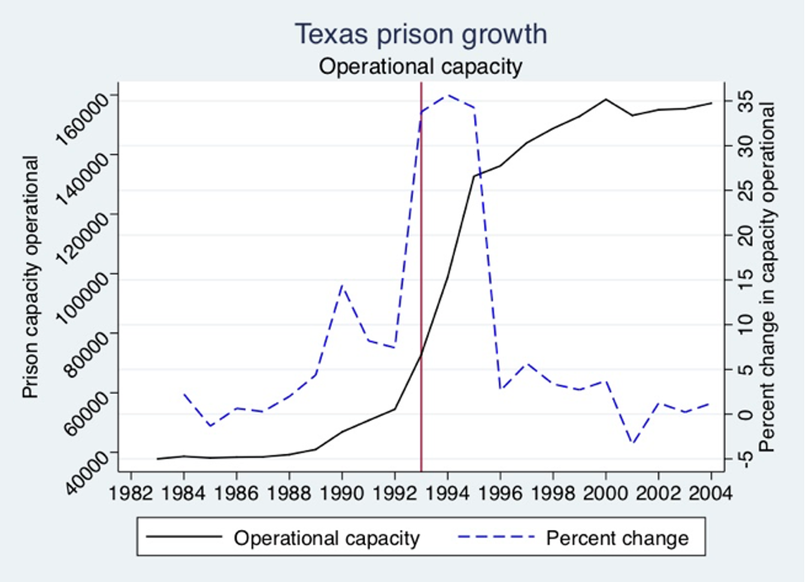
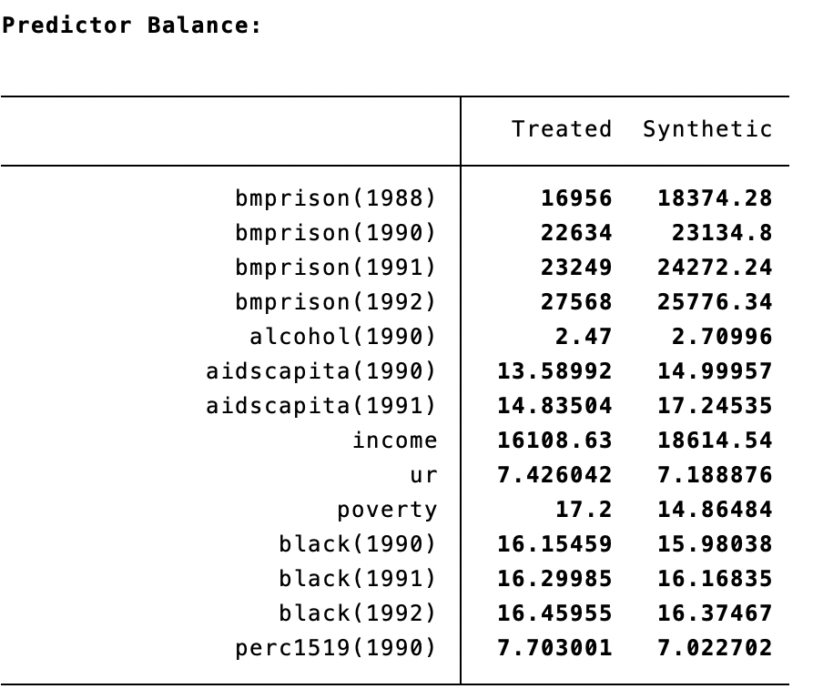
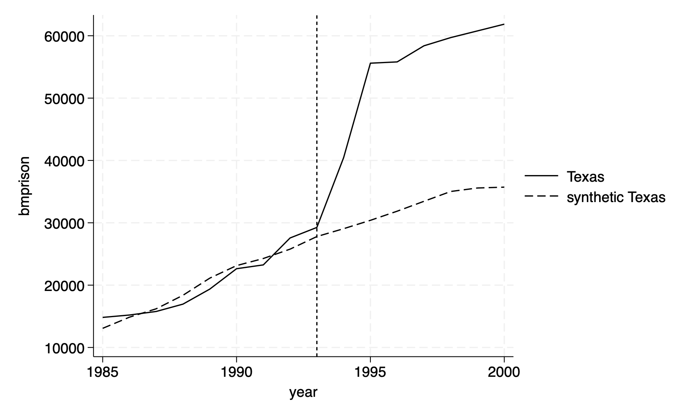
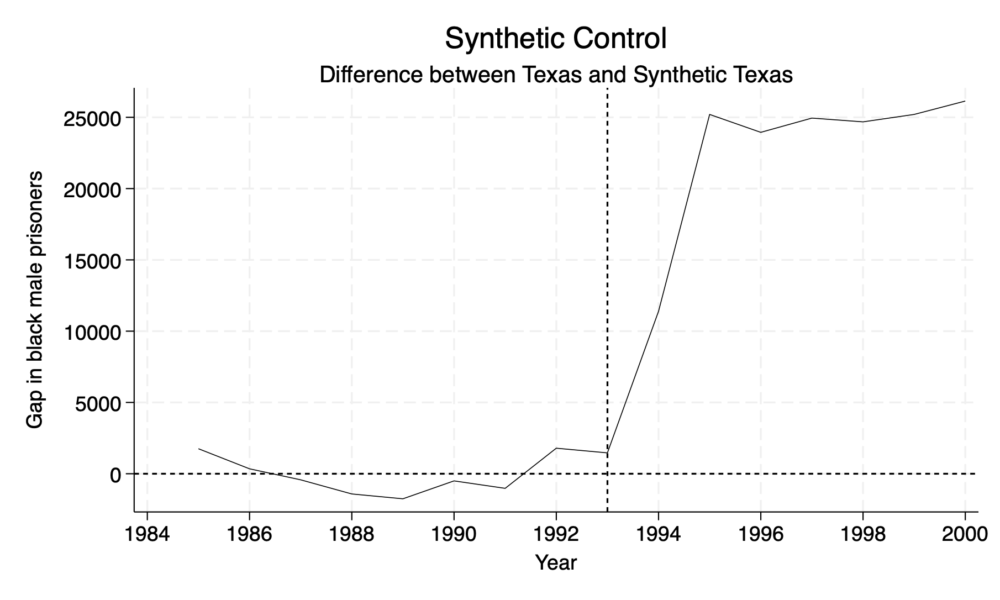

Chapter 1 Synthetic Control
This is just a generalization of the difference-in-differences design and one of the most important evaluation designs in recent years (Athey and Imben, 2017). We use a quantitative comparative case study by focusing on a particular single unit, such as a state, school, county, group, etc. We optimize a set of weights from a donor pool of comparison states to generate a counterfactual for the treatment state.
The Premise: Abadie and Gardeazabal (2003) use a method of a weighted average of units from a donor pool to model a counterfactual (synthetic control)
1.1 The estimator
Our synthetic contorl method is the following:
\[ \hat{\delta} = Y_{1t}-\sum^{J+1}_{j=2}w^*_jY_{jt} \]
Where
- \(J=1\) is our treatment group
- \(J+1\) is our donor pool of comparison
- \(Y_1t\) is the outcome of the treatment group
- \(Y_{jt}\) is the outcome from donor \(j\)
- \(w^*_j\) is a vector of optimized weights that is a function of our choice of covariates
The synthetic control estimator estimates the effect of the program at time \(t \geq T_{0}\).
It’s just the difference between our treatment group and a weighted control group at time \(T_{0}\). Where our optimized-weighted control group will depend on our set of covariates we choose
Matching variables: Matching variables \(X_1\) and \(X_0\) are chosen as predictors of post-intervention outcomes and must be unaffected by the program, treatment, or intervention.
1.2 synth package
First, we will install the synth package.
Next, we will install the mat2txt package.
1.3 Prison Construction
We will recreate Cunningham and Kang (2019) work on the effect of building prisons and black male incarceration rates. We will import and inspect our data after installing our packages.
Cunningham (2021) provides the change in prison in Texas and shows that 1993 begins the prison construction boom.

Next, let’s bring the data and summarize the black male incarceration rate per 100,000.
/Users/Sam/Desktop/Econ 672/Data
BM Prison
-------------------------------------------------------------
Percentiles Smallest
1% 0 0
5% 24 0
10% 47 0 Obs 816
25% 489 0 Sum of wgt. 816
50% 3055.5 Mean 7625.753
Largest Std. dev. 10088.11
75% 11425.5 58393
90% 21153 59709 Variance 1.02e+08
95% 27204 60785 Skewness 2.080135
99% 46235 61861 Kurtosis 8.401005We can see that the mean black male incarceration rate is 3,055 per 100,000.
Next we need to set our idcount and check for redundant values. This is a good practice when working with panel data.
sort statefip year
by statefip year: gen idcount = _N
tab idcount
*No redundent or repeated values
drop idcount idcount | Freq. Percent Cum.
------------+-----------------------------------
1 | 816 100.00 100.00
------------+-----------------------------------
Total | 816 100.00Now, we can set the panel with statefips being our unit of analysis and year being our time dimension
Panel variable: statefip (strongly balanced)
Time variable: year, 1985 to 2000
Delta: 1 unitWe have a balanced panel to begin our synthetic control. This step is not necessary for the analysis, but I recommend establishing your panel before further analysis.
1.4 Estimate the Weighted Treatment Effect
We will next calculate the gaps, or the weighted average treatment effect on the treated compared to a synthetic comparison.
We will use our outcome, but also lags in our outcomes, covariates, and lags in our covariates. We will specify that Texas, \(FIPS=48\), is our treatment unit and the time of treatment is 1993. We specify the pre-intervention period from 1985 to 1993 and increment by 1 year with mseperiod. This is the period where we want to minimize the Mean Squared Predicted Error or \(MSPE\).
Cunningham provides the covariates used to estimate synthetic Texas
- Lagged pre-treatment rates in 1988, 1990, 1991, and 1992
- Unemployment rate, income, and poverty
- Lagged AIDS per capita in 1990, 1991
- Lagged Black population % in 1990,1991, and 1992
- Percentage of 15-24 year olds in 1990
synth bmprison bmprison(1988) bmprison(1990) bmprison(1991) bmprison(1992) alcohol(1990)
aidscapita(1990) aidscapita(1991) income ur poverty black(1990) black(1991) black(1992)
perc1519(1990), trunit(48) trperiod(1993) unitnames(state) mspeperiod(1985(1)1993)
resultsperiod(1985(1)2000) keep(synth_bmprate.dta) replaceSynthetic Control Method for Comparative Case Studies
----------------------------------------------------------------------------------
First Step: Data Setup
----------------------------------------------------------------------------------
----------------------------------------------------------------------------------
Data Setup successful
----------------------------------------------------------------------------------
Treated Unit: Texas
Control Units: Alabama, Alaska, Arizona, Arkansas, California,
Colorado, Connecticut, Delaware, District of
Columbia, Florida, Georgia, Hawaii, Idaho, Illinois,
Indiana, Iowa, Kansas, Kentucky, Louisiana, Maine,
Maryland, Massachusetts, Michigan, Minnesota,
Mississippi, Missouri, Montana, Nebraska, Nevada,
New Hampshire, New Jersey, New Mexico, New York,
North Carolina, North Dakota, Ohio, Oklahoma,
Oregon, Pennsylvania, Rhode Island, South Carolina,
South Dakota, Tennessee, Utah, Vermont, Virginia,
Washington, West Virginia, Wisconsin, Wyoming
----------------------------------------------------------------------------------
Dependent Variable: bmprison
MSPE minimized for periods: 1985 1986 1987 1988 1989 1990 1991 1992 1993
Results obtained for periods: 1985 1986 1987 1988 1989 1990 1991 1992 1993 1994
1995 1996 1997 1998 1999 2000
----------------------------------------------------------------------------------
Predictors: bmprison(1988) bmprison(1990) bmprison(1991)
bmprison(1992) alcohol(1990) aidscapita(1990)
aidscapita(1991) income ur poverty black(1990)
black(1991) black(1992) perc1519(1990)
----------------------------------------------------------------------------------
Unless period is specified
predictors are averaged over: 1985 1986 1987 1988 1989 1990 1991 1992
----------------------------------------------------------------------------------
Second Step: Run Optimization
----------------------------------------------------------------------------------
----------------------------------------------------------------------------------
Optimization done
----------------------------------------------------------------------------------
Third Step: Obtain Results
----------------------------------------------------------------------------------
Loss: Root Mean Squared Prediction Error
---------------------
RMSPE | 1295.489
---------------------
----------------------------------------------------------------------------------
Unit Weights:
----------------------------------
Co_No | Unit_Weight
---------------------+------------
Alabama | 0
Alaska | 0
Arizona | 0
Arkansas | 0
California | .408
Colorado | 0
Connecticut | 0
Delaware | 0
District of Columbia | 0
Florida | .109
Georgia | 0
Hawaii | 0
Idaho | 0
Illinois | .36
Indiana | 0
Iowa | 0
Kansas | 0
Kentucky | 0
Louisiana | .122
Maine | 0
Maryland | 0
Massachusetts | 0
Michigan | 0
Minnesota | 0
Mississippi | 0
Missouri | 0
Montana | 0
Nebraska | 0
Nevada | 0
New Hampshire | 0
New Jersey | 0
New Mexico | 0
New York | 0
North Carolina | 0
North Dakota | 0
Ohio | 0
Oklahoma | 0
Oregon | 0
Pennsylvania | 0
Rhode Island | 0
South Carolina | 0
South Dakota | 0
Tennessee | 0
Utah | 0
Vermont | 0
Virginia | 0
Washington | 0
West Virginia | 0
Wisconsin | 0
Wyoming | 0
----------------------------------
----------------------------------------------------------------------------------
Predictor Balance:
------------------------------------------------------
| Treated Synthetic
-------------------------------+----------------------
bmprison(1988) | 16956 18374.28
bmprison(1990) | 22634 23134.8
bmprison(1991) | 23249 24272.24
bmprison(1992) | 27568 25776.34
alcohol(1990) | 2.47 2.70996
aidscapita(1990) | 13.58992 14.99957
aidscapita(1991) | 14.83504 17.24535
income | 16108.63 18614.54
ur | 7.426042 7.188876
poverty | 17.2 14.86484
black(1990) | 16.15459 15.98038
black(1991) | 16.29985 16.16835
black(1992) | 16.45955 16.37467
perc1519(1990) | 7.703001 7.022702
------------------------------------------------------
----------------------------------------------------------------------------------
counter | pri_inf | dual_inf | pri_obj | dual_obj | sigfig | alpha | nu
----------------------------------------------------------------------------------
0 | 9.51e+01 | 1.57e-03 | -1.82e+00 | -5.02e+02 | 0.000 | 0.0000 | 1.00e+02
1 | 5.46e-01 | 8.99e-06 | -1.77e+00 | -9.08e+02 | 0.000 | 0.9943 | 2.73e-05
2 | 1.14e-02 | 1.88e-07 | -1.41e+00 | -3.35e+01 | 0.000 | 0.9791 | 3.67e-05
3 | 1.21e-03 | 1.99e-08 | -1.45e+00 | -4.88e+00 | 0.000 | 0.8943 | 3.09e-05
4 | 2.39e-04 | 3.94e-09 | -1.77e+00 | -2.65e+00 | 0.497 | 0.8022 | 1.15e-05
5 | 1.14e-05 | 1.87e-10 | -1.81e+00 | -1.87e+00 | 1.673 | 0.9525 | 1.67e-07
6 | 4.95e-06 | 8.16e-11 | -1.81e+00 | -1.84e+00 | 2.042 | 0.5645 | 1.01e-06
7 | 1.77e-06 | 2.91e-11 | -1.82e+00 | -1.83e+00 | 2.490 | 0.6428 | 2.88e-07
8 | 7.32e-07 | 1.20e-11 | -1.82e+00 | -1.82e+00 | 2.865 | 0.5864 | 1.39e-07
9 | 3.15e-07 | 5.19e-12 | -1.82e+00 | -1.82e+00 | 3.238 | 0.5696 | 6.39e-08
10 | 9.21e-09 | 1.52e-13 | -1.82e+00 | -1.82e+00 | 4.622 | 0.9708 | 1.16e-10
11 | 4.60e-11 | 7.66e-16 | -1.82e+00 | -1.82e+00 | 6.907 | 0.9950 | 1.39e-13
12 | 2.30e-13 | 3.47e-17 | -1.82e+00 | -1.82e+00 | 9.204 | 0.9950 | 7.23e-16
13 | 1.31e-15 | 2.05e-17 | -1.82e+00 | -1.82e+00 | 11.502 | 0.9950 | 3.64e-18
14 | 6.19e-16 | 3.65e-17 | -1.82e+00 | -1.82e+00 | 13.792 | 0.9950 | 1.84e-20
----------------------------------------------------------------------------------
optimization convergedWe have a few interesting results.
First, our \(RMSPE=1295.489\). We can and should continue to test the combination of covariates that reduces the \(RMSPE\) in the pre-treatment period. Recall that Abadie, Diamond, and Hainmueller suggest choosing a \(V\) that minimizes the mean squared prediction error in the pre-treatment period. Recall that we can influence the \(w\) through \(V\) since \(V\) is a function of our covariates.
\[ RMSPE=\sqrt{\sum^{T_0}_{t=1} \left( Y_{1t}-\sum^{J+1}_{j=2}w^{*}_{j}(V)Y_{jt}\right)^2} \]
Second, our results show that California is the largest donor with a weight of 40.8%. Illinois is next with a weight of 36%, while Louisiana and Florida are the thrird and fourth largest donors at 12.2% and 10.9%, respectively.
Next we have our predictor balance between Texas and Synthetic Texas.

These looked balanced, but what are we missing? Ways to test the null hypothesis that these are not different!
1.5 Plot the Graph
We can add the option figure to the synth command to plot the Texas vs Synthetic Texas.
synth bmprison bmprison(1988) bmprison(1990) bmprison(1991) bmprison(1992) alcohol(1990) aidscapita(1990) aidscapita(1991) income ur poverty black(1990) black(1991) black(1992) perc1519(1990), trunit(48) trperiod(1993) unitnames(state) mspeperiod(1985(1)1993) resultsperiod(1985(1)2000) keep(synth_bmprate.dta) replace fig
1.6 Plot the Gap or Difference
We are going to pull our results from the synthetic control method with the file synth_bmprate.dta, which we defined in the keep option.
The first two columns are our donor pool and their weights. We don’t need these now so we can drop them. The 3rd and 4th columns are our outcomes of interest: \(Y\) of Texas and \(Y\) of Synthetic Texas. The 5 column is our time period
keep _Y_treated _Y_synthetic _time
drop if _time==.
rename _time year
rename _Y_treated treat
rename _Y_synthetic counterfactGenerate the difference/gap between Texas outcome and Synthetic Texas outcome.
Finally, we will plot the difference between two outcomes
twoway (line gap48 year,lp(solid)lw(vthin)lcolor(black)), yline(0, lpattern(shortdash) lcolor(black)) ///
xline(1993, lpattern(shortdash) lcolor(black)) xtitle("Year",si(medsmall)) xlabel(#10) ///
ytitle("Gap in black male prisoners", size(medsmall)) legend(off)
save synth_bmprate_48.dta, replace
We can see an difference about 25,000 black males incarcerated per capita in 1995. However, we need to test the null hypothesis to see if this is a statistically significant effect.